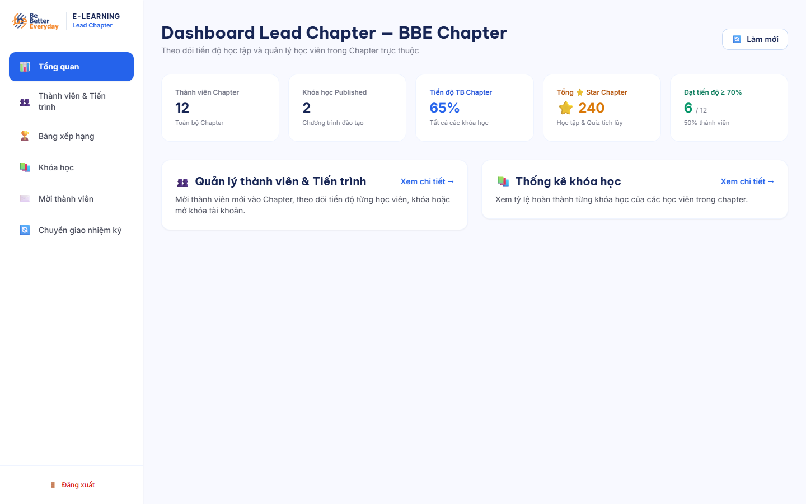
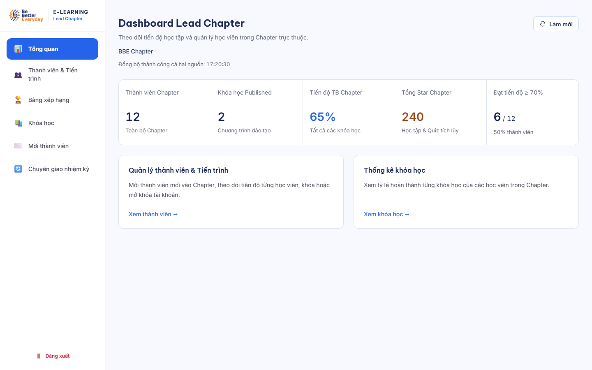

BBE Lead Chapter — Pilot trước rollout
Đối chiếu ảnh chụp trực tiếp cùng dữ liệu minh họa: 12 thành viên, 2 khóa học, tiến độ 65%, 240 Star. “Before” là mã cf88238; “After” là Pilot trong working tree. Ảnh dùng API giả lập; integration Supabase được chạy và báo cáo riêng.




Những thành phần đã cải thiện
- Tiêu đề 24px, nhóm số liệu có nhịp điệu và khoảng cách rõ; blue cho tiến độ, orange cho Star, navy cho phân cấp nội dung.
- Năm chỉ số dùng số tabular và panel phẳng, viền nhẹ, radius 12px. Mobile dùng hàng nhãn–giá trị, vùng chạm tối thiểu 44px trong Pilot.
- Timestamp theo nguồn đã đồng bộ thành công; refresh giữ dữ liệu và bố cục, lỗi từng nguồn có thông báo cụ thể.
- Khóa học giữ các thao tác Học viên, Nội dung, Video và Quiz; danh sách buổi học có disclosure mở sẵn và giữ nguyên nội dung trong DOM.
- Bản nháp chuyển giao gắn chủ sở hữu; giữ sheet, ngày hiệu lực, nhiệm kỳ và kết quả parse khi đổi view, navigation, refresh hoặc F5.
Animation thực tế trong ứng dụng
Hai video dưới ghi trực tiếp Pilot trên Edge với API/YouTube giả lập. Điều hướng và modal dùng opacity từ 0,88 → 1 trong 180ms; accordion có cùng nhịp xuất hiện. Reduced motion tắt chuyển động này. Các lớp motion giữ nguyên hình học của player và fullscreen.
Video là bằng chứng UI với dữ liệu thử, không phải xác nhận phát media hay nghiệp vụ backend thật. Mở kết quả kiểm thử motion.
Before / after về request
| Phép đo | Before | After |
|---|---|---|
| 10 vòng Dashboard ↔ Courses đã làm nóng | 90 business GET | 0 business GET |
| Auth trong cùng 10 vòng | 0 | 20, xác minh từng protected route |
| 10 vòng Current ↔ History sau lần mở đầu | 20 GET trong baseline kế hoạch | 0 business GET trong kiểm thử Pilot |
| Refresh Dashboard | 2 endpoint | Đúng 2 endpoint |
| Mở/đóng accordion | Chưa có disclosure | 0 GET |
90 → 0 được đo lại bằng cùng script, Edge 156, Next dev + Strict Mode, thao tác có hover. Baseline kế hoạch là Chromium/điều kiện khác và ghi 30 GET; không trộn hai phép đo. API giả lập không chứng minh độ trễ hay tính đúng backend thật. Before · After.
Gate trước rollout
Báo cáo kiểm thử và giới hạn đầy đủ · C01–C10 · Unit/regression · Responsive specimen